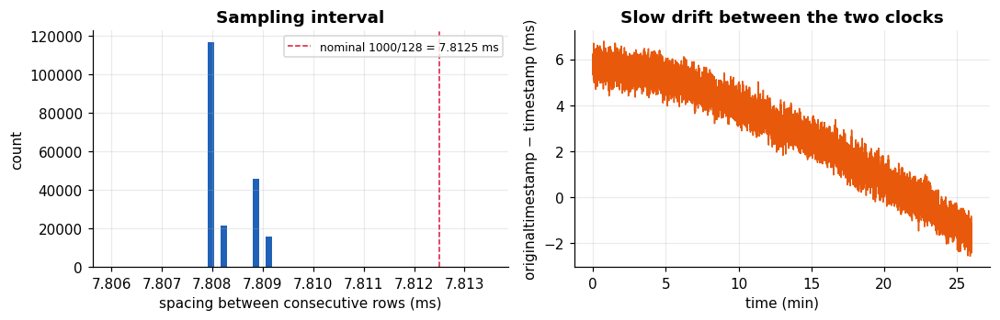
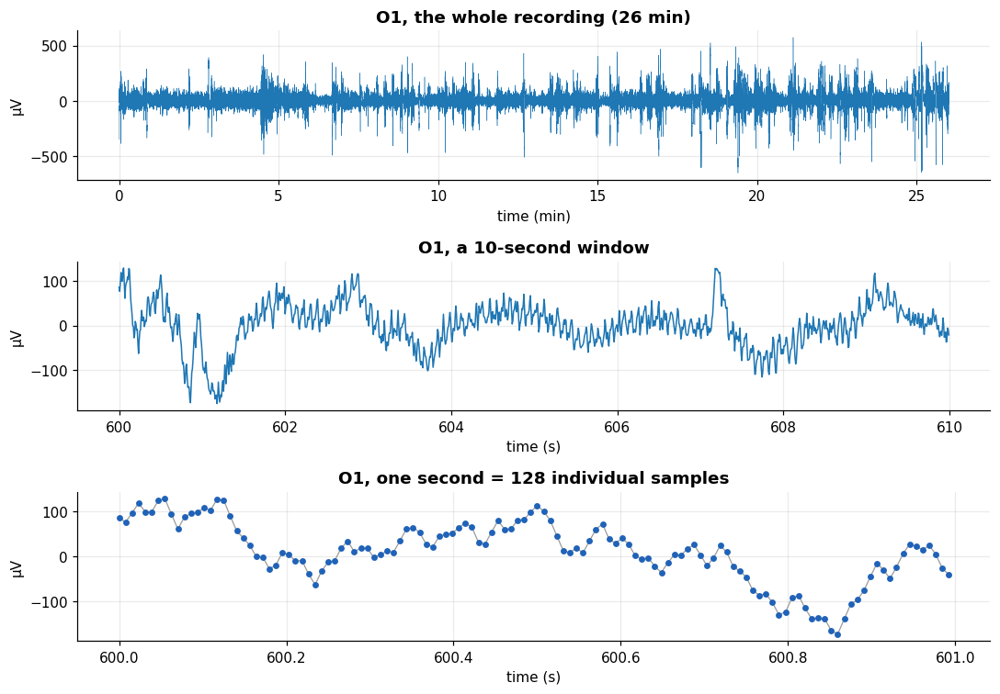

Time axis and sampling rate#
Learning objectives
- Build a reliable time axis from the time stamps and estimate the sampling rate \(f_s\) from the data.
- Use the sample counter and the interpolation flag to prove that no samples were lost.
- Understand nominal versus measured rate and clock drift between two time stamps.
- Move between seconds and sample indices, and extract time segments of a channel.
An EEG recording is a discrete-time signal: a list of numbers \(x[0], x[1], \dots, x[N-1]\) sampled every \(T_s\) seconds. All of signal processing (Fourier transform, filters, spectrograms) assumes that you know \(T_s\) precisely and that no samples are missing. Let us check both.
Before you start
This Point continues from the previous one: the variables df, CH, FS and the plotting style must already exist. If you start here, first run the cells of Point 1 and 2 (or the file lab_code.py downloadable from the top bar).
Building the time axis#
The column timestamp is Unix time in seconds, which is a huge number (about 1.7 billion). We subtract the first value to obtain seconds since the start of the recording, then study the spacing between consecutive rows.
t = df["timestamp"].to_numpy() - df["timestamp"].iloc[0] # seconds since the first sample
dt = np.diff(t) # spacing between rows
print(f"first sample : {pd.to_datetime(df['timestamp'].iloc[0], unit='s')} UTC")
print(f"last sample : {pd.to_datetime(df['timestamp'].iloc[-1], unit='s')} UTC")
print(f"duration : {t[-1]:.2f} s = {t[-1] / 60:.2f} min")
print(f"number of samples N = {len(t)}")
print(f"median spacing = {np.median(dt) * 1e3:.4f} ms -> fs = {1 / np.median(dt):.3f} Hz")
print(f"mean rate (N-1)/duration = {(len(t) - 1) / t[-1]:.3f} Hz")
print(f"smallest / largest spacing: {dt.min() * 1e3:.4f} / {dt.max() * 1e3:.4f} ms")
first sample : 2024-03-04 13:09:21.058814049 UTC last sample : 2024-03-04 13:35:20.409112930 UTC duration : 1559.35 s = 25.99 min number of samples N = 199705 median spacing = 7.8080 ms -> fs = 128.074 Hz mean rate (N-1)/duration = 128.069 Hz smallest / largest spacing: 7.8080 / 7.8092 ms
The recording lasts 25.99 minutes (199,705 samples). The sampling interval is almost constant: it never deviates by more than a few microseconds, and there is not a single gap (the largest spacing is 7.809 ms, hardly different from the median). The estimated rate is 128.07 Hz, a little above the nominal 128 Hz.
Definition: Sampling period, sampling rate, Nyquist frequency
If the samples are taken every \(T_s\) seconds, the sampling rate is \(f_s = 1/T_s\) (in Hz) and the Nyquist frequency is \(f_N = f_s/2\). Here \(T_s \approx 7.81\) ms, \(f_s = 128\) Hz and \(f_N = 64\) Hz: the highest frequency the file can represent unambiguously is 64 Hz (Point 6 explains why).
Why is the measured rate (128.07 Hz) not exactly 128 Hz? Every device runs on a quartz oscillator, which is accurate to some tens or hundreds of parts per million, and the time stamps in the file come from clocks that are slightly out of step. The relative offset here is about 0.058%, which would shift a 10 Hz rhythm by only about 0.006 Hz. For spectral analysis we therefore use the nominal value FS = 128, which is how the manufacturer defines the sample grid.
Rule of thumb
Use the time stamps to check the sampling rate and to find gaps, but use the nominal \(f_s\) to analyse. Build the time vector as t = np.arange(N) / FS whenever you need a perfectly regular grid.
Two time stamps and clock drift#
The file has two time stamps, timestamp and originaltimestamp. Plotting their difference against time, together with the histogram of sampling intervals, shows what each one does.
fig, ax = plt.subplots(1, 2, figsize=(10, 3.3))
ax[0].hist(dt * 1e3, bins=np.linspace(7.806, 7.8135, 60), color="#1f62b8")
ax[0].axvline(1000 / FS, color="crimson", ls="--", label="nominal 1000/128 = 7.8125 ms")
ax[0].set_xlabel("spacing between consecutive rows (ms)"); ax[0].set_ylabel("count")
ax[0].set_title("Sampling interval"); ax[0].legend(fontsize=8)
drift = (df["originaltimestamp"] - df["timestamp"]).to_numpy() * 1e3 # milliseconds
ax[1].plot(t / 60, drift, color="#e8590c")
ax[1].set_xlabel("time (min)"); ax[1].set_ylabel("originaltimestamp − timestamp (ms)")
ax[1].set_title("Slow drift between the two clocks")
plt.tight_layout(); plt.show()

Left: the interval is concentrated near 7.808 ms, about 4.5 µs shorter than the nominal 7.8125 ms (red dashed line). Right: the difference between the two time stamps is a smooth ramp, from about 5.8 ms at the beginning to about -1.9 ms at the end. A sudden jump would indicate a lost packet; a smooth ramp is the signature of two clocks running at slightly different speeds (here by about 5 parts per million). Nothing to repair: a drift of 9 ms in 26 minutes is irrelevant for EEG rhythms, but it would matter if you had to align the EEG with an external stimulus device to within a few milliseconds.
Were any samples lost?#
The counter eeg.counter goes 0, 1, …, 127 and wraps around every second. If a packet is lost, the counter jumps by more than 1 and the software normally sets eeg.interpolated to 1 for the reconstructed samples. We test both facts:
step = np.diff(df["eeg.counter"].to_numpy()) % 128 # difference modulo 128 (wrap-around)
print("counter increments :", pd.Series(step).value_counts().to_dict())
print("interpolated flags :", df["eeg.interpolated"].value_counts().to_dict())
print("index increments :", pd.Series(np.diff(df["index"])).value_counts().to_dict())
counter increments : {1.0: 199704}
interpolated flags : {0.0: 199705}
index increments : {1: 199704}Every increment equals 1 (after taking the difference modulo 128 to handle the wrap-around), no sample is flagged as interpolated and the row index is perfectly consecutive. Conclusion: the time series is complete and uniformly sampled, so we can apply the Fourier transform and digital filters directly. Always do this check; a recording with dropped packets would need to be re-gridded first.
Seconds, samples and segments#
Conversions between time and index are the bread and butter of signal analysis. If a sample has index \(n\), its time is \(t = n/f_s\); a time \(t\) corresponds to index \(n = \lfloor t f_s \rfloor\). The helper function below extracts a segment between two instants and returns it with its time vector. We will reuse it in every chapter.
def seg(ch, t0, t1):
"""Return (time in s, voltage in µV) of channel `ch` between t0 and t1 seconds."""
n0, n1 = int(t0 * FS), int(t1 * FS)
return np.arange(n0, n1) / FS, df[f"eeg.{ch}"].to_numpy()[n0:n1]
fig, ax = plt.subplots(3, 1, figsize=(10, 7))
x_all = df["eeg.o1"].to_numpy()
ax[0].plot(np.arange(len(x_all)) / FS / 60, x_all, lw=.3)
ax[0].set_xlabel("time (min)"); ax[0].set_title("O1, the whole recording (26 min)")
ts, xs = seg("o1", 600, 610)
ax[1].plot(ts, xs); ax[1].set_xlabel("time (s)"); ax[1].set_title("O1, a 10-second window")
ts, xs = seg("o1", 600, 601)
ax[2].plot(ts, xs, color="#999", lw=.8); ax[2].plot(ts, xs, "o", ms=3.5, color="#1f62b8")
ax[2].set_xlabel("time (s)"); ax[2].set_title("O1, one second = 128 individual samples")
for a in ax: a.set_ylabel("µV")
plt.tight_layout(); plt.show()

The three views show the same signal at three scales. At the minute scale you see bursts of high amplitude (movements, blinks) separated by calmer periods. At the second scale you can see rhythmic oscillations, and at the sample scale you see that the "continuous" curve is in fact a sequence of 128 dots per second: the plotting software just connects them. The discrete nature of the data is the root of all the phenomena studied in Chapter 6.
Exercise: Convert time and samples
(a) How many samples correspond to 5 minutes? (b) At what time (in seconds) does sample number 100,000 occur? (c) A 2-second epoch contains how many samples, and how many non-overlapping 2-second epochs fit in the recording?
Show solution
(a) \(5\times 60\times 128 = 38{,}400\) samples. (b) \(100{,}000/128 = 781.25\) s, i.e. 13 min 1.25 s. (c) \(2\times128 = 256\) samples per epoch; \(\lfloor 199{,}705/256 \rfloor = 780\) epochs.
print(5*60*FS, 100_000/FS, 2*FS, len(df)//(2*FS))
Self-check: The estimated rate from the time stamps is 128.07 Hz but the nominal rate is 128 Hz. What should you do for spectral analysis?